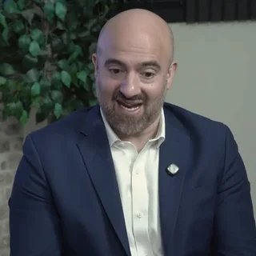

Steve Bannon
The Republican midterm defeat and the future of MAGA.
46:38
The Republican midterm defeat and the future of MAGA.

What the midterms revealed about the Republican coalition.

Enoch Powell, Islam and the legacy of Boris Johnson’s immigration policy.

Why Britain fought the First World War, in a conversation recorded in 2018.

The Iran war, Texas and the voters Trump lost in the midterms.

Seeking asylum in the Netherlands, and what integration asks of a newcomer.
At 102, a veteran remembers pre-war London and a school trip to Nazi Germany.

Immigration and the French left.